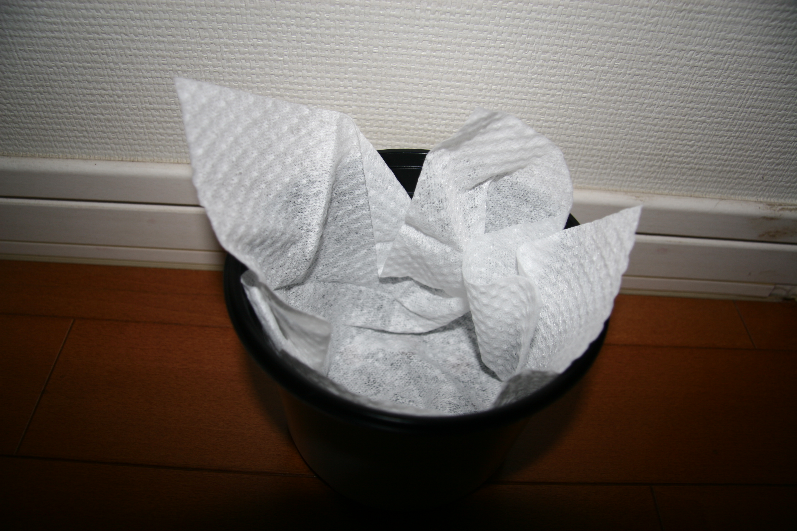
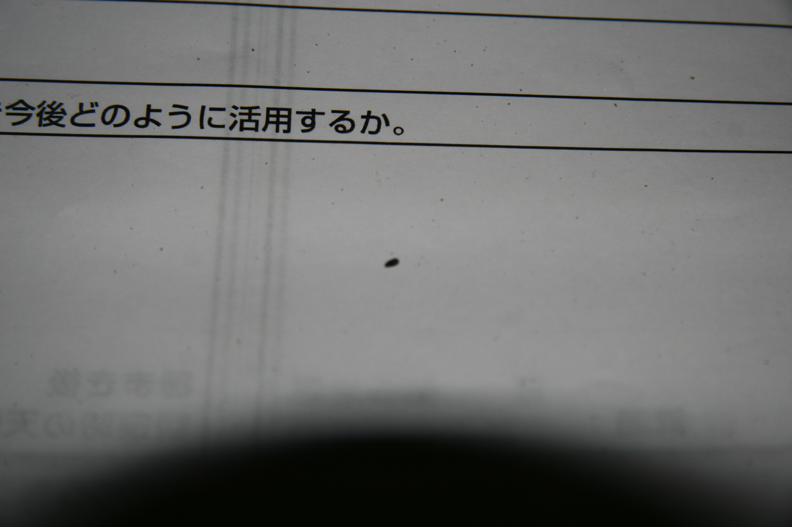

|
|||
| 気温・天候 |
28℃・晴れ |
ハーブの発芽には少し高いので調整しようと思う。 |
|
| 発芽個数・草丈平均 |
15個中0個・0mm |
これから頑張って発芽させようと思う。 |
|
|  |
準備 1.ボウルカップに鉢底シートを入れた。 2.ボウルカップに土を入れた。 3.ボウルカップに大量の水を入れた。 4.種をばらまきした。 |
||
|  |
感想 種は思っていたよりも小さかった。 気温の調節はしっかりやろうと思った。 |
||